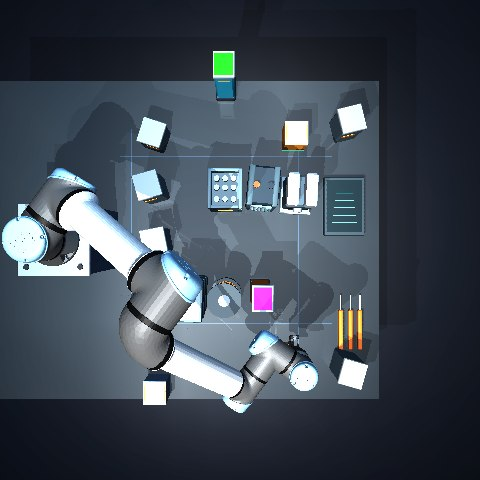

Carrying a part through clutter with online replanning杂乱工作台上的夹持搬运与在线重规划
Grasping a part and carrying it through dense, moving clutter · MuJoCo contact simulation
夹持工件穿过密集且移动的障碍 · MuJoCo 接触仿真
A UR5e with a Robotiq gripper picks a coloured part and carries it across a dense workbench: eleven static groups with random offsets and rotations, plus two carts that drive into the corridors. A* on a collision-checked roadmap gives the route; a two-second look-ahead watches the carts. When the way ahead is blocked the arm brakes and a background thread searches a new route while the physics keeps running; if no corridor is free, it waits.
UR5e 配 Robotiq 夹爪抓起一个彩色工件，穿过密集的工作台：11 组带随机偏移与旋转的静态物件，外加两台会驶入通道的料车。路线由碰撞检查后的路网上的 A* 搜索给出，2 秒前瞻持续监视料车。前方受阻时机械臂先制动，后台线程在物理仿真不停的情况下搜索新路线；没有可通行的通道时则原地等待。
Role:个人贡献： Self-directed extension of earlier work on vision-based sorting, October 2026.在此前视觉分拣工作基础上的自主延伸，2026 年 10 月。
Overview概览
The earlier vision-based sorting policy works on a flat table with nothing in the way. This work asks what happens when the arm has to carry the part through clutter, and the clutter moves. Everything runs in MuJoCo with contact physics: the gripper really holds the part, and the arm links, gripper and part are all checked against every obstacle.
此前的视觉分拣策略面对的是一张空旷的平桌。这项工作要回答的是：当机械臂需要把工件搬运着穿过杂物、而杂物还会移动时，会发生什么。全部在带接触物理的 MuJoCo 中运行：夹爪真实地夹住工件，机械臂各连杆、夹爪与工件都与每一个障碍物做碰撞检查。
Roadmap + A*路网 + A*
Routes are searched on a roadmap pre-checked for the whole arm, the gripper and the held part.在预先做过整臂、夹爪与所夹工件碰撞检查的路网上搜索路线。
Look-ahead前瞻检查
Every 0.1 s the next 2 s of the plan are checked against where the carts will be.每 0.1 秒检查接下来 2 秒的路线与料车的预测位置。
Asynchronous replanning异步重规划
On a predicted block the arm brakes; a separate thread searches a new route while the carts keep moving, then the result is re-checked.预测到阻塞时机械臂制动；独立线程在料车继续运动的同时搜索新路线，完成后再次核对。
Execution执行
50 Hz tracking control; if no corridor is free, the arm holds and waits.50 Hz 跟踪控制；没有可通行的通道时原地等待。
Replay any run in 3D三维回放每一次实验
This is not an animation: every frame is a saved MuJoCo state (joint angles, gripper, part and carts at 25 Hz) drawn with the original UR5e and Robotiq meshes. Drag to orbit, scroll to zoom, or jump to an event. The plan view on the right shows the current route in orange, the path travelled in teal and, dashed, where each cart will be in 2 s.
这不是动画：每一帧都是保存下来的 MuJoCo 状态（关节角、夹爪、工件与料车，25 Hz），用 UR5e 与 Robotiq 的原始网格绘制。拖动旋转、滚轮缩放，或点击事件跳转。右侧俯视图中橙色为当前路线、青色为已走路径，虚线框为料车 2 秒后的位置。
The 3D replay loads when you scroll here.滚动到此处时载入三维回放。
Same scene, same carts, two strategies同一场景、同样的料车，两种策略
Scene 2911 was run twice with identical cart motion and the same tracking controller. The online run may search a new corridor; the control run only waits until its original route is clear again. Times cover the carry, waiting and replanning, not the grasp and the release.
场景 2911 在完全相同的料车运动与跟踪控制器下运行了两次。在线组可以搜索新通道；对照组只等待原路线重新可通行。计时包括搬运、等待与重规划，不含抓取和放置。
All recorded runs全部实验记录
collisions: obstacle penetration over 0.5 mm or self-collision over 1 mm; the intended grasp contact is excluded碰撞：障碍穿透超过 0.5 mm 或自碰撞超过 1 mm；预期的夹持接触不计入
| Scene · strategy场景 · 策略 | Result结果 | Carry搬运 | Holding等待 | Replans重规划 | Plan P95规划 P95 | Collisions碰撞 | Final error终点误差 |
|---|---|---|---|---|---|---|---|
| Loads with the 3D replay.随三维回放一起载入。 | |||||||
One matched pair of runs: the 29.8 % shorter carry time shows the mechanism, not an average gain.只有一组配对实验：搬运时间缩短 29.8 % 说明了机制，不代表平均收益。
From a contact lab to moving obstacles从接触实验到移动障碍
The workbench is the last of several stages, each kept with its own records.工作台是若干阶段中的最后一个，每个阶段都保留了各自的记录。Maze stage: tracking controllers on three mazes迷宫阶段：三张迷宫上的跟踪控制器
A learned world-model MPC tracked the path about 21 % more closely than the baseline, but it leaned on the safety fallback and came closer to the walls: minimum sampled clearance fell from at least 6 mm to about zero. The workbench stage therefore keeps the margin explicit.学习型世界模型 MPC 的路径跟踪误差比基础控制器低约 21 %，但它频繁触发安全回退，也更贴近墙体：最小采样间隙从不少于 6 mm 降到约 0。因此在工作台阶段把安全余量明确保留下来。
| Maze迷宫 | Baseline RMSE基础 RMSE | Baseline clearance基础 最小间隙 | Fallbacks回退 | MPC RMSEMPC RMSE | MPC clearanceMPC 最小间隙 | MPC fallbacksMPC 回退 |
|---|---|---|---|---|---|---|
| 2717 | 20.4 mm | 6.4 mm | 0 | 16.1 mm | 3.0 mm | 62 |
| 2746 | 21.5 mm | 8.8 mm | 0 | 16.8 mm | −0.1 mm | 116 |
| 2752 | 20.2 mm | 6.3 mm | 0 | 16.2 mm | −0.2 mm | 68 |


What these runs do and do not show这些实验能说明什么
- Simulation only (MuJoCo). The static map is known; in the recorded runs the carts follow a known motion model, which the look-ahead uses for its forecast.仅为仿真（MuJoCo）。静态地图已知；在录制的实验中料车按已知的运动规律运动，前瞻检查据此预测。
- Three random layouts around one hand-built skeleton, a fixed downward tool orientation and a finite roadmap; success on arbitrary clutter is not tested.三种随机布局共用一个手工设计的可通行骨架，工具朝向固定向下、路网有限；未测试任意杂乱场景下的成功率。
- Planning is asynchronous but has no hard real-time guarantee; its latency is reported per run.规划为异步执行但没有硬实时保证；每次实验都单独记录了规划耗时。